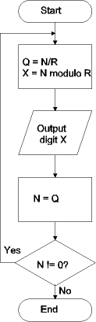

| Previous Section | Next Section | Index | Questions | Search the Text |
Developing programs, especially using an assembler, can be difficult. And the difficulty increases as the program becomes more complex. This section is a basic overview of two techniques to aid program development, flowcharts and pseudocode. Not only do these techniques help conceptualize a program design, but they also can be used to document the design.
The following flowchart is the algorithm for value to digit conversion we have seen earlier:

A flowchart shows the flow of execution through the algorithm, which can be a full program or a single routine or algorithm. Each symbol represents an operation, while arrows are used to indicate program flow from one operation to another. The shape of the symbol has significance. We will only use four basic shapes.
We will use flowcharts in this text to illustrate algorithms which have conditional or iterative features.
If you are familiar with a high level language, such as C, you might want to develop and document algorithms using pseudocode. A program in pseudocode looks like a program in a high level language, however it does not have to be capable of being compiled as it is just written for human use. The algorithm is written in pseudocode and then manually converted to assembly code.
We will occasionally use C pseudocode in the text. For instance, the value to digit conversion algorithm could be represented as:
unsigned int n, r, x, q;
n = valueToConvert;
r = 10; /* the radix */
do {
q = n / r;
x = n % r;
Output(x);
n = q;
} while (n != 0);
Continue with 68HC12 Instruction Set Overview.
Return to the Index.